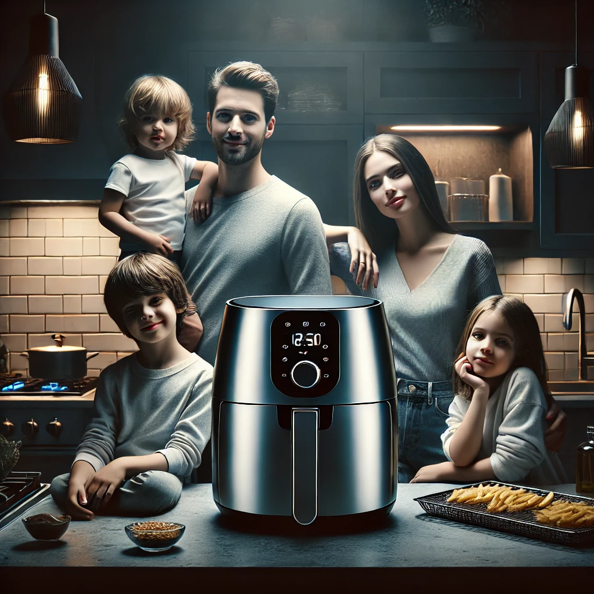

Best Air Fryer for Large Families
Cooking for a large family can be a challenge, especially when trying to prepare healthy and delicious meals quickly. An air fryer can be a game-changer, offering a convenient and efficient way to cook a variety of dishes with less oil. Here are some of the best air fryers for large families, designed to handle bigger portions and make meal prep easier.
1. Ninja Foodi 8-Quart 9-in-1 Deluxe XL Pressure Cooker & Air Fryer
Key Features:
- Large Capacity: 8-quart pot and a 5-quart Cook & Crisp Basket.
- 9-in-1 Functionality: Pressure cook, air fry, steam, slow cook, sear/sauté, bake/roast, broil, dehydrate, and make yogurt.
- TenderCrisp Technology: Pressure cook to lock in juices, then finish with a crisp.
Why It's Great for Large Families:
The Ninja Foodi 8-Quart model is perfect for large families due to its versatile cooking functions and large capacity. It allows you to cook large meals in one go, saving time and effort.
2. COSORI Air Fryer Max XL 5.8-Quart
Key Features:
- 5.8-Quart Capacity: Fits a whole 5-pound chicken.
- 11 Preset Functions: Customize cooking for different foods.
- Non-Stick Basket: Dishwasher safe and easy to clean.
Why It's Great for Large Families:
The COSORI Air Fryer Max XL offers ample space to cook large portions, making it ideal for big families. Its preset functions simplify the cooking process, and the non-stick basket ensures easy cleanup.
3. Instant Vortex Plus 10-Quart Air Fryer Oven
Key Features:
- 10-Quart Capacity: Can cook multiple dishes at once.
- 7-in-1 Functionality: Air fry, bake, roast, toast, broil, dehydrate, and rotisserie.
- EvenCrisp Technology: Ensures perfect crisping.
Why It's Great for Large Families:
With its 10-quart capacity, the Instant Vortex Plus allows you to prepare large meals or multiple dishes simultaneously. The variety of cooking functions makes it a versatile tool for any kitchen.
4. GoWISE USA GW44800-O Deluxe 12.7-Quart Air Fryer Oven
Key Features:
- 12.7-Quart Capacity: One of the largest air fryers available.
- 15 Preset Functions: For a wide range of cooking options.
- Built-in Rotisserie: Perfect for roasting whole chickens and more.
Why It's Great for Large Families:
The GoWISE USA Deluxe 12.7-Quart Air Fryer Oven is perfect for very large families or those who like to entertain. Its huge capacity and built-in rotisserie make it incredibly versatile.
5. PowerXL Air Fryer Pro 6-Quart
Key Features:
- 6-Quart Capacity: Suitable for family-sized meals.
- 7-in-1 Functionality: Air fry, rotisserie, dehydrate, bake, roast, broil, and reheat.
- Rapid Air Technology: Cooks food quickly and evenly.
Why It's Great for Large Families:
The PowerXL Air Fryer Pro's 6-quart capacity is ideal for cooking large family meals. Its rapid air technology ensures quick and even cooking, making meal preparation faster and more efficient.
Conclusion
Choosing the right air fryer can make a significant difference when cooking for a large family. The models listed above offer ample capacity and versatile cooking functions to help you prepare delicious and healthy meals with ease. Investing in one of these top-rated air fryers can simplify your kitchen routine and ensure everyone in your family is well-fed.
Do you have any favorite air fryers for large families? Share your recommendations in the comments below!